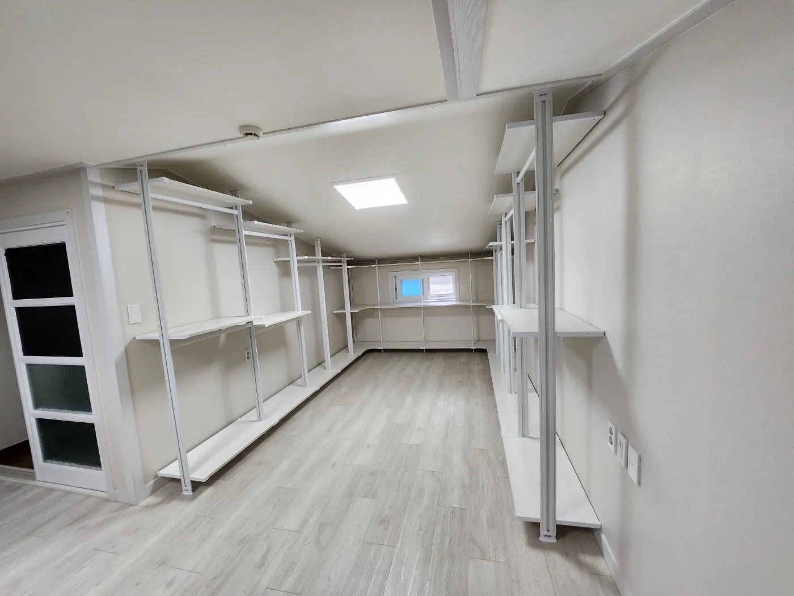

Villa
빌라
시스템행거 이전설치
계단과 천장 구조가 빌라 이전설치의 핵심입니다.
빌라는 엘리베이터가 없거나 계단이 좁은 경우가 많아 긴 폴과 서랍장을 옮기는 방법을 먼저 정해야 합니다. 꼭대기 층은 다락이나 경사 천장이 있어 천장 높이가 위치마다 다르기도 합니다.
코니처는 계단 폭과 층수를 확인해 부품을 운반하기 좋은 단위로 나누고, 경사 천장이나 낮은 천장에서는 폴을 세울 수 있는 위치를 골라 배치합니다.

Situations
빌라에서 자주 있는 경우
엘리베이터 없는 3층 이상
계단 운반 시간을 고려해 일정을 잡습니다.
좁은 계단
서랍장처럼 큰 부속은 분리해서 옮깁니다.
다락·경사 천장
천장이 높은 쪽에 폴을 세우고 낮은 쪽은 낮은 선반으로 씁니다.
오래된 벽
벽 고정이 필요하면 벽 상태를 먼저 확인합니다.
Checklist
빌라 이사 체크 항목
| 항목 | 확인 내용 | 필요한 이유 |
|---|---|---|
| 층수 | 두 집의 층 | 계단 운반량을 가늠합니다 |
| 계단 폭 | 꺾이는 부분 | 긴 폴이 지나가는지 봅니다 |
| 천장 높이 | 위치별 높이 | 폴 설치 위치를 정합니다 |
| 벽 상태 | 균열·들뜸 | 고정 방식을 정합니다 |
| 주차 | 골목 정차 가능 여부 | 운반 동선을 짭니다 |
Process
빌라 이전설치 순서
계단·천장 사진
계단 꺾이는 부분과 천장 사진을 받습니다.
운반 계획
부품을 계단으로 옮기기 좋은 단위로 나눕니다.
해체
기존 집에서 칸별로 해체합니다.
계단 운반·설치
새 집으로 옮겨 천장 높이에 맞게 설치합니다.
점검
수평과 흔들림을 확인합니다.
FAQ
자주 묻는 질문
엘리베이터가 없으면 비용이 더 드나요?
층수에 따라 운반 시간이 늘어날 수 있어 상담 때 미리 안내합니다.
경사 천장에도 폴을 세울 수 있나요?
폴은 천장이 평평한 곳에 세워야 합니다. 높이가 충분한 위치를 골라 배치합니다.
계단이 꺾여서 폴이 안 올라갈까 봐요
계단 사진을 보내주시면 폴 길이와 비교해 운반 방법을 확인합니다.
반지하 방에도 설치할 수 있나요?
가능합니다. 습기가 있는 벽이면 선반 배치를 미리 상의합니다.
벽이 오래돼서 약한데요
벽 고정 대신 천장·바닥 지지 방식이 맞는지 확인합니다.